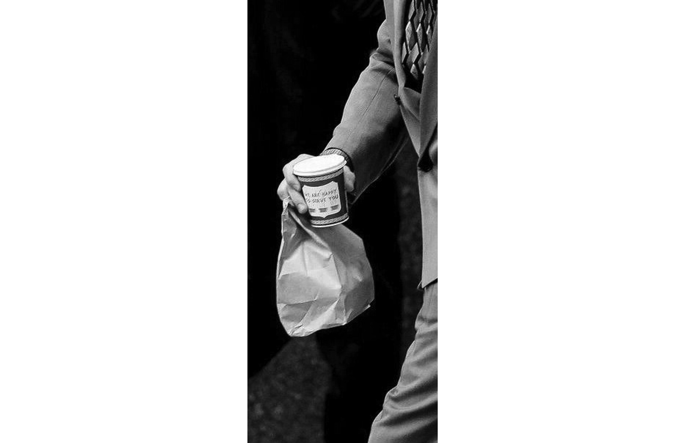
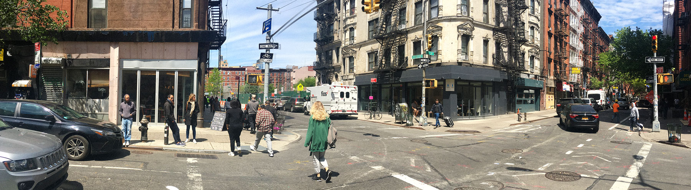
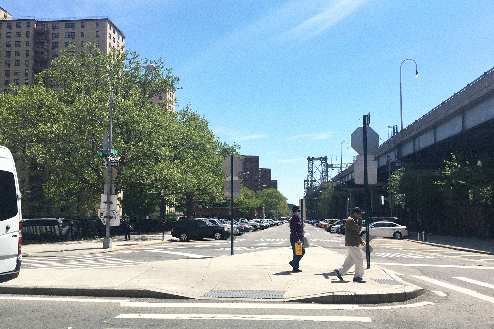
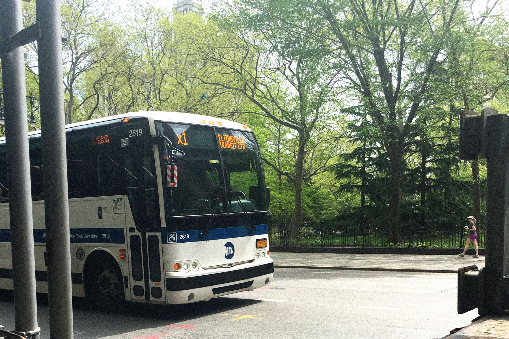
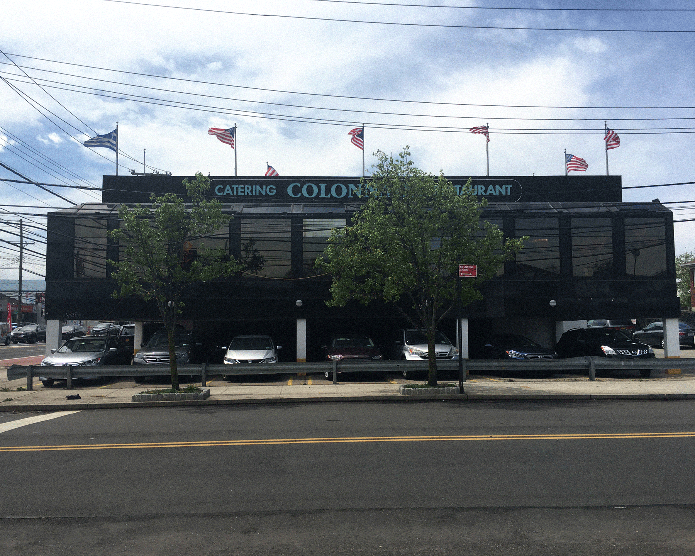
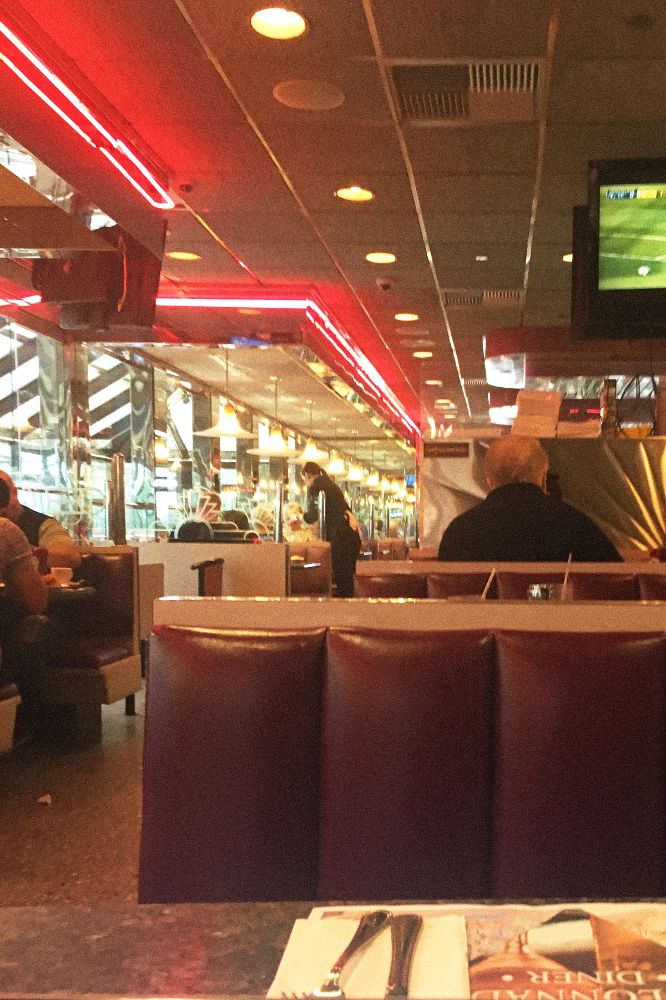
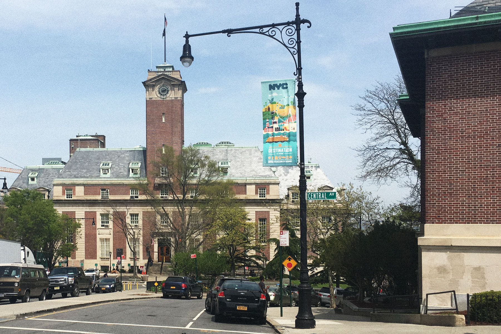
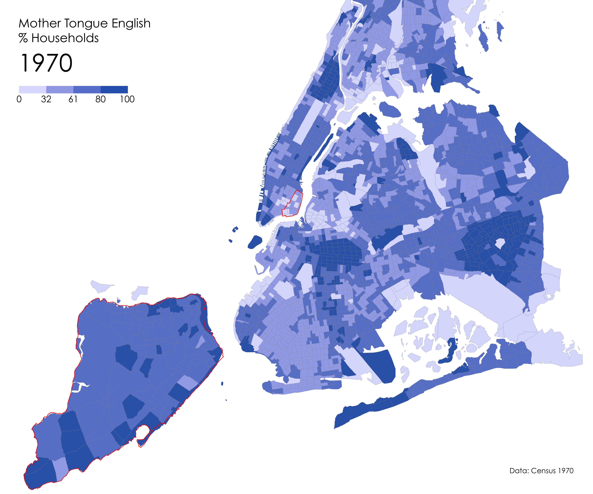
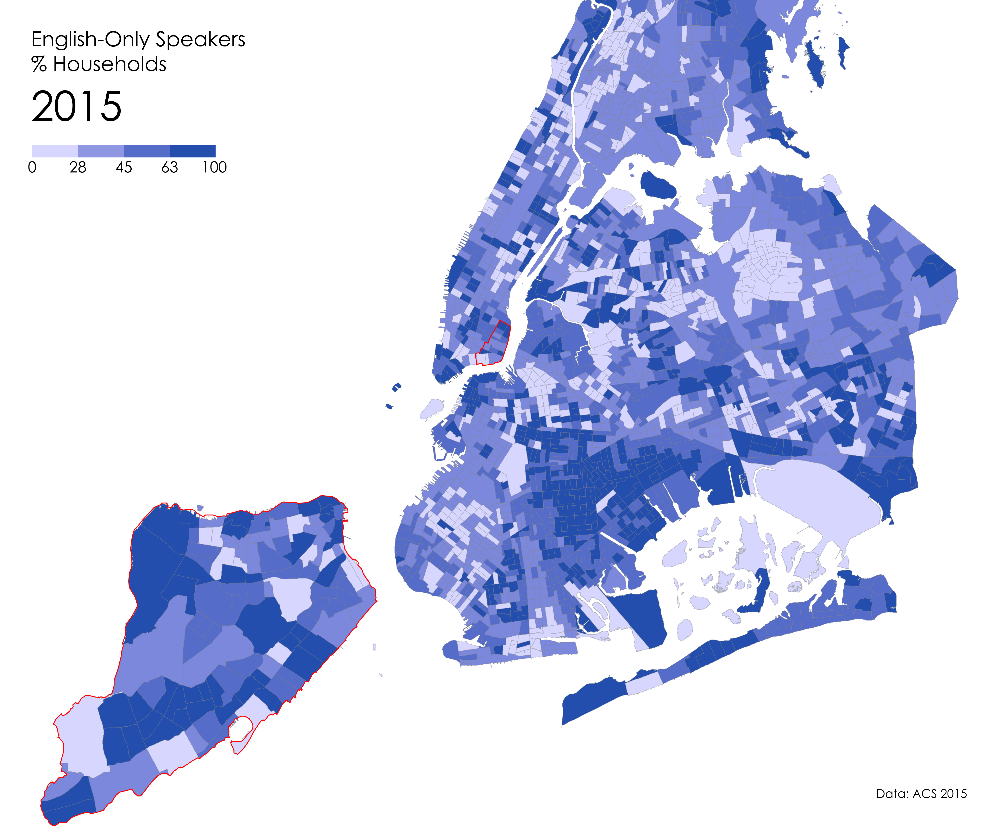
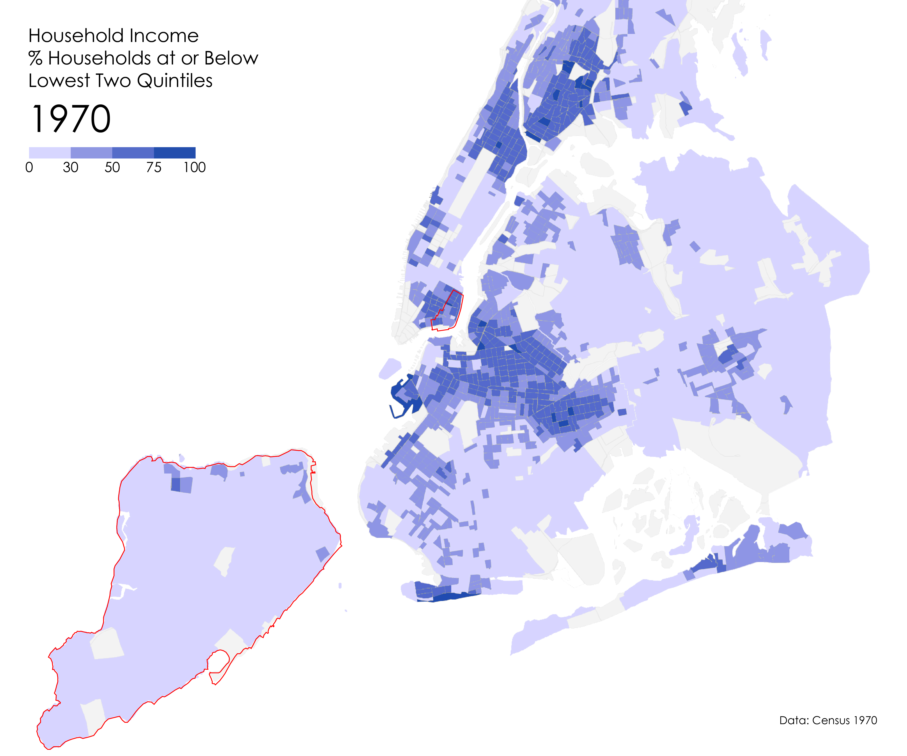

A Benchmark, An Index
A Benchmark, An IndexA Benchmark, An Index
An accent can be both an index of the generations of speakers who have given a language its form and a benchmark against which newcomers are evaluated. It is perhaps not surprising that in a city like New York, which is home to hundreds of languages and dialects, and which has been the ultimate destination for generations of immigrants, certain particularities of speech have arisen. There has consequently emerged what could be called a 'New York accent'. Although this extraordinarily diverse environment has no doubt had an effect on the languages in its midst, it is in New York City English (NYCE) that these particularities are evident to the point of cliché.
A Rubric, An Attitude
New York City English, a loose rubric under which the speech patterns and habitudes of various historical ethnic groups have been enfolded, is often characterized by a tendency toward th-stopping, non-rhotic speech, and a fluid conversational dynamic or repartee.
Th-stop
Non-rhotic speech
NYCE
It has taken many forms over the ages, falling in and out of vogue, but has so held the popular imagination that to utter a single word like coffee (CAW-fee) is, for many, to bespeak an essentially New York City attitude.

With Consequences
However, this attitude is not without its implications. In 1966, William Labov published his years-long study on the complex linguistic environment of New York City English, called “The Social Stratification of English in New York City,” which made clear the ways in which speech is freighted with social implications.
In his interviews with the residents of the Lower East Side and customers in department stores (spaces that instantiated the class divisions of the time), he found a marked difference in the way people spoke when they were conscious of their speech and when they were not. Often, the characteristic New York City English traits would be actively suppressed, to a degree that varied by class, in self-conscious speech.
Labov thus uncovered and catalogued the various class distinctions and significations latent in the speech patterns of New Yorkers. His was a seminal work for the field of sociolinguistics, and despite his problematic handling of the Englishes spoken by non-white New Yorkers, his research remains the definitive study of the way New Yorkers speak.
Sound of the Past?
However, the streets of Manhattan no longer ring with the same sounds of long vowels and glides: the accent is fading. Like so many other languages in the city, NYCE is susceptible to forces like stigmatization and population diffusion, and is being swept away by a standardized mode of speech, the so-called General American Dialect (GAD).
Today, in places like the Lower East Side, where in the early 1960's William Labov conducted his research, one could close their eyes and imagine themselves in Cleveland or St. Louis; the General American Dialect rings more or less the same through every city.
The General American Dialect is commonly associated with regions of the midwestern United States, but as its name suggests, its qualities are difficult to place within any particular geography. What's more, wealthy speakers typically exhibit fewer regional characteristics in their speech, and so to a certain degree, their speech, irrespective of their geographic origins, is akin to the General American Dialect.
Listening In
However, if you listen closely, you might just hear the accent, emanating from the margins of the city. It is here, where many of the same classes of people who shaped the accent have moved, pushed out by the market forces of Manhattan, that the accent still rings out. And it is here, free from stilted nostalgia, that the accent is being reshaped again by generations of newcomers.
The Accent, from the Ground: The Lower East Side
And so I set out with fresh ears to listen for the New York accent, trying to trace the contours of where it might be found today. My search began where William Labov conducted his research in the 1960's, in the Lower East Side, and I set out one recent afternoon to hear what remains of the accent in the neighborhood.

Here, in the western region of the neighborhood, at the corner of Rivington and Stanton, we can see that what was once a dense immigrant enclave is now home to twin coffee shops. This typifies much of the neighborhood today, and whilst walking these blocks I heard a variety of languages ranging from Spanish, to Cantonese, to GAD English, but nothing of the New York accent.

As I walked east, towards the river, the coffeeshops were replaced with laundromats and small grocery stores; the city was shedding its self-consciousness. Walking through the eastern edge of the neighborhood, most every conversation I overheard was in Spanish, or in English infused with Spanish phrases.
This is the prevailing sound of much of New York today, and the English spoken here is a New York Accent if there ever were one, however the accent from the era of Labov's field work was nowhere to be heard.
Continuing my path south, crossing under the Williamsburg Bridge, I had all but given up the search when I happened to pass by this fire station at just the right moment. As I passed, the sounds of the mid-century New York accent spilled out from the station: the firefighters were arguing. Suddenly, the streets were awash with long vowels and baroque swearing - but only for a moment. As I walked, the doors came down and the accent faded away again.
Finally, I ended my walk at the far southern edge of the neighborhood, fittingly at an artisan donut shop nestled between NYCHA housing units. Over coffee and a donut, I asked the cashier about their perception of the New York accent and about how often they overheard it in the neighborhood.
Not surprisingly, they responded that the accent was nearly gone from the neighborhood, and from Manhattan for that matter. However, they noted that it was present in speech of the construction workers in the neighborhood and around parts of Brooklyn. Clearly, the accent has retained some of its socioeconomic connotations over time.

And yet, just next door under the sign labeled "Pizza School," I encountered a man whose th-stopping sent the sound of 60's Manhattan rushing back. Stopping another door down, at an artisan bialy store, I was surrounded by GAD English but for the man in the far corner of the restaurant whose accent exhibited all of the classical traits of the New York accent. And so it is clear that the accent is still to be found in Manhattan, but it is only at the edges of the city, in the far corners of the weekday lunch rush, or in the otherwise unselfconscious areas of the island that one has a chance to catch it.
The Accent in the Field: Staten Island
From having taken the Staten Island Ferry on a number of occasions in the past, I had a sense that the New York accent might be more prevalent on the island. I had assumed that this was driven by both its relative geographic isolation - it takes at least half an hour to travel from the island to Manhattan - and thus its stable demographics.
But according to the most recent census data and a study from the Center for an Urban Future, Staten Island has experienced a greater increase of foreign-born population than all the other boroughs: as much as 35% over the last fifteen years. What's more, its white majority has waned to just over half the population. Clearly, the island is not an isolated backwater as is commonly held by the rest of the city.
And so I set off again to hear what I could on the island. The fieldwork was conducted along the southeastern edge of the island, in the neighborhoods of New Dorp, Dongan Hills, Stapleton, Tompkinsville, and Port Richmond - an assortment of neighborhoods that are home both to many multi-generational Staten Island families and to a growing number of immigrant communities, and which provide a representative cross-section of the island in terms socioeconomics.

The journey began with a bus ride. The X1 express bus service costs $6.50 each way, and runs from Lower Manhattan, through a tunnel into Brooklyn, before crossing Verazzano Bridge to Staten Island. The bus stop is wanting of both cover and seats. This trip takes the better part of an hour, and a weekly "unlimited pass" costs in excess of fifty-dollars. And in that way, the island is forced to remain as such: an island.
Once on the bus, I was immediately greeted by the sounds of New York City English. The long bus ride felt, in a way, like a journey into another, earlier New York: people around me talked idly in their native New York English whilst scenes of industrial Brooklyn, replete with a warehouse fire and sloppy graffiti, flew past.
Once on the island, the urban fabric changed completely. There is a marked profusion of single-family, detached homes, and long commercial strips. In my time on the island, I listened as I walked through an office supply store, a flower market, a number of convenience stores and restaurants, and through the residential streets: the accent was all around.
Of particular note was something I overheard in the office supply store in Dongan Hills. In this audio clip, one can hear an example of the New York Accent but inflected with another, non-English one. This is telling, as it provides a glimpse into how these languages collide.
At the Colonnade Diner, a 24-hour establishment along Hylan Boulevard, the accent was buzzing all around the restaurant, decked with chrome and neon accents. The speakers ranged from the young to the elderly, and with only a cursory look, appeared to represent a variety of ethnic heritage.

When asked about her perception of the accent and whether she thought it was at risk of fading, one of the staff responded that she thought that accent was being actively, consciously, suppressed in Manhattan because of its working-class connotations. But in Staten Island, she said, "we let it all hang out."
The switch between being reserved and "letting it all hang out,” is one way of saying that the residents are performing what linguists call “code switching.” Code switching is the conscious or subconscious manipulation of language and register to hew to the normative language of a particular group or place, or to transgress those norms. This practice can be mundane, such as the shift in the form of speech used to address one’s parents and the form used to address one’s close friends, or it can be arcane, such as the shift between languages known and unknown to the surrounding community.
However, code switching is also a powerful tool for survival in a world in which speech perception is heavily freighted with social and political connotations. Code switching, as Ana Celia Zentella writes, can represent "a stigmatized group's attempts to construct a positive self within an economic and political context that relegates its members to static and disparaged ethnic, racial and class identities, and that identifies them with static and disparaged language codes and practices.”
To be sure, the New York accent does not present a severe existential threat for its speakers. It is, however, interesting to note that even so, some of its speakers elect to suppress their habits as they travel to different areas of the city. It is shifts in language like this that give a fine grain texture to a city, forming what Maria Stoicheva calls "micro publics."

As I continued my walk, up through to Stapleton, I overheard a great deal of languages that were not English. But when I did hear English, it was most always spoken with the traits of NYCE or of African American English (another form of New York City English which would rightly share the title of New York Accent). Clearly, the accent is not only alive, but strong enough to marking the speech of ESOL speakers. It is far from fading away.

In fact, as I approached the ferry terminal, I stopped into a library overlooking the water. Inside, there was a videoscreening of a TED talk, about the danger of stereotyping no less, that was attended by no one but the librarian who proudly declared that the accent was alive and well and that his was not to be confused for a New York City accent: he was from Long Island.
On the ferry, heading toward Manhattan, tourists whizzed around, snapping photos of the distant skyline. Their shouts of glee formed a polyglottal cloud that drifted through the ship, drowning out the sound of the rudder and the [likely New-York-Accented] deckhands; they had taken the ferry to see the city, and were excited to see it in the afternoon sun and to pass the island where so many generations of newcomers had landed.
But as the Manhattan skyline grew before them, they were drawing farther and farther away from a part of the city that has left an indelible mark in the collective imagination, and which lives on, free from the self-awareness of a globalized Manhattan, only in the places they might never visit.
They came to the island to see Manhattan, but New York City was right behind them, on Staten Island.
How to Listen
That the New York Accent can still be heard to some degree at the outer edges of the city raises several interesting questions that this project sought to address at the intersection of class, language, and space. The following section works as an addendum to the field work above, making the case that there are larger, citywide forces at hand. Language is difficult to map, and so these maps serve only to speculate what the driving forces are of the disappearance of the New York Accent from Manhattan.
Among the questions at hand are: to what extent is the accent actually an index; to what degree has it been shaped by relative newcomers? And more to the point, how conscious is the accent?
What role have demographic shifts, since 1960, played in the disappearance of NYCE from Manhattan?
What is the relationship between the General American Dialect and the gentrification of the city?
Why might the accent be found in one place, but not another? To what extent are the areas of its prevalance areas that are relatively isolated from the rest of the city?
English Concentration
The following maps, utilizing data from the U.S. Census Bureau and the American Community Survey, show concentrations of English speakers in the city, with Staten Island and the Lower East Side outlined in red.
Generally, it seems that monolingual or mother-tongue English speakers have diffused over time, with a higher prevalence of areas with fewer than 30% monolingual English speakers, especially in places like Staten Island. In places like the Lower East Side, however, it seems that the opposite is true, with a slight increase in concentration since 1970.
Wealth Distribution
If an accent can be considered an index of class, then it would follow that the New York Accent, given its traditional lower-middle and working-class connotations, might be most prevalent in the areas of the city with comparatively lower levels of household income.
The following maps, utilizing data from the U.S. Census Bureau and the American Community Survey, indicate the concentrations of households at or below the lowest two quintiles of wealth distribution.

What we can see from these maps is that while the Lower East Side has stayed relatively stable, remaining a place with a relatively high concentration of low-income households, Staten Island has shifted, taking on more low-income households over time. However, the island remains, generally, an area with a relatively high number of middle and upper-middle class households.

A Benchmark, An Index, An Identity
Clearly, language does not hew to categorical distinctions, be they spatial, demographic or otherwise. Rather, it is something more fluid. And if an accent is both an index and a benchmark for its speakers, it is also precisely this reason that it is a critical means of constructing a collective identity.
When the waiter in Staten Island remarked that some speakers of NYCE from the island suppress their accent when they travel to Manhattan, she was referring to a code-switch made, to some degree, in self-interest — these speakers are likely seeking to shed the perception of it being a working class manner of speech. But when these speakers return to the island, letting “it all hang out,” they are also code-switching: not, perhaps, to preserve a people (or rather their professional identity), but to preserve a place.
In fact, by electing to speak with the accent, or more likely, electing not to suppress it, the speakers are practicing a form of social construction that gives shape to a collective identity, and gives the speakers access to that group’s shared history and values.
Speaking with the New York City Accent might be a means of staking a claim to the city, evoking its history. After all, in its sound are the voices of generations of New Yorkers.
Matthew Ransom
Graduate student in Architecture, GSAPP